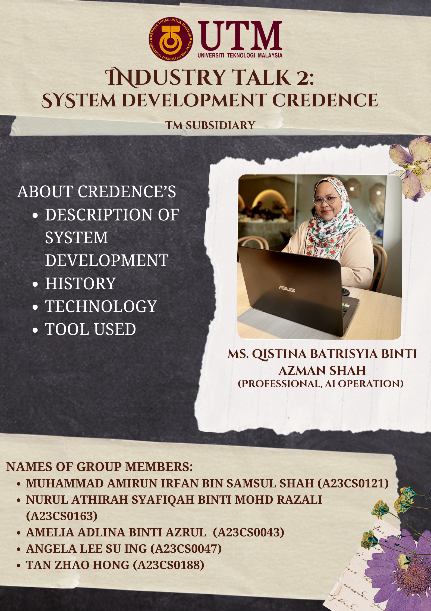
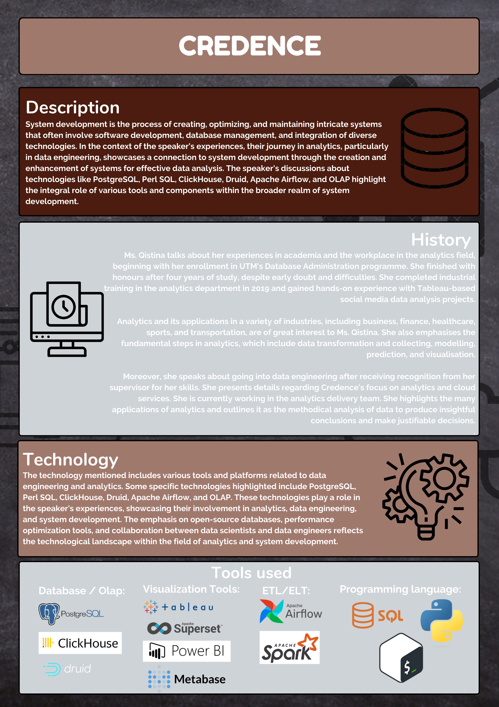
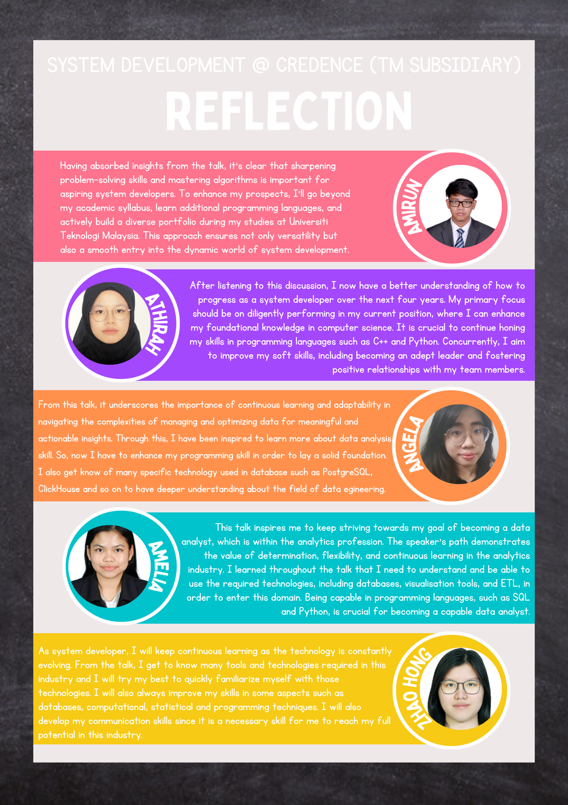

System Development @ Credence (TM Subsidiary)
  My reflection ✩₊˚.⋆☾⋆⁺₊✧
The journey of the speaker in analytics. Their ability to overcome difficulties and graduate with honours is admirable. The comprehensive description of the analytics process, encompassing data collecting and visualisation, has broadened my understanding.
The shift to data engineering brought to light the value of mentorship and potential identification. The difficulties encountered during the internship highlighted the practical obstacles in the field, highlighting the importance of flexibility and continuous learning.
Perspectives on the cooperation between engineers and data scientists are in line with the evolving requirements of the business. The speaker offers beneficial advice for those looking for internships; she emphasises organisational cooperation, displaying talent, and taking a proactive approach. All in all, this session has deepened my understanding and given me a road map for my own analytics career.